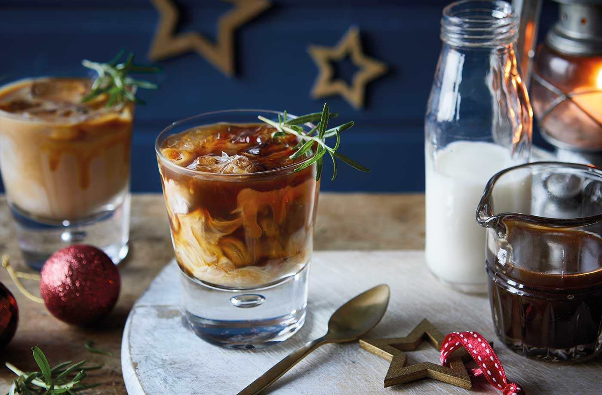

Home
Salted caramel white Russian mocktail

Indulge your sweet tooth with this non-alcoholic twist on a classic white Russian cocktail.
With strong coffee, cream and a drizzle of sweet salted caramel sauce, this is the ultimate grown up mocktail to try this Christmas.
Ingredients
- 4 tsp instant coffee
- ½ tsp vanilla extract
- 2 tsp sugar
- 4 tbsp Tesco Finest salted caramel sauce
- 100ml single cream
- 4 rosemary sprigs, to serve
Method
- Dissolve the coffee in 400ml boiling water. Stir in the vanilla extract and sugar until dissolved, then set aside to cool.
- When ready to serve, drizzle the salted caramel sauce down the sides of 4 glasses.
- Add a couple of ice cubes to each glass and carefully pour in the coffee.
- Divide the cream between the glasses (1-2 tbsp per glass) and lightly swirl together. Garnish with a rosemary sprig.